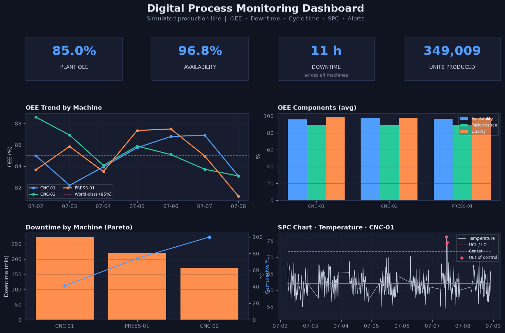

Applied AI · Deployment & Integration · Manchester, UK
I ship AI that has to beright in production.
Three years taking AI and biometric systems from a customer's ambiguous requirements
into live production across 10+ countries — and building the tooling that proves
they still work once they're there.
Every figure on this page names its source. Where a number is confounded or
can't be isolated, it says so. That habit is the job: my RAG assistant refuses
answers it can't ground in a document, and the biometric systems I deploy decide
whether a face clears an age threshold. Unverifiable claims are the failure mode
in both.
300+customer accounts served weekly by an assistant I built and shippedVerified Live traffic, GroundedOps admin console
40% / 55%fall in first-line ticket volume and resolution time after releaseConfounded Jira, since release — ran alongside other initiatives, so not isolated to this tool
How this was made. This page's own markup, filmed by a scripted camera and cursor. The mini assistant is the
highlight card above, rebuilt in HTML from the live assistant's screens; its second question is a staged example the
manuals can't answer. Every figure is the one on this page, with its tag.
Evidence
Two systems, both public — read the code, check the numbers
GroundedOps — retrieval assistant that refuses to guess
A support assistant over hardware manuals and internal specs, now answering for
300+ customer accounts a week through an embeddable widget. Hybrid BM25 and dense
retrieval merged with reciprocal rank fusion, a sigmoid-calibrated cross-encoder
reranker, then an NLI entailment check on every sentence before it reaches the
screen. When it can't ground an answer, it says so rather than inventing one.
The part worth reading is a bug I nearly shipped. The hallucination gate was
passing invented claims at 0.99 confidence and refusing verbatim-correct ones at
0.02 — the verifier was reading the classifier's neutral class
instead of entailment. The gate was inverted and every surface metric
looked healthy.
Correcting the class index and premise granularity took a true/false claim battery
from three wrong verdicts to 8 out of 8. Nothing upstream would have caught it,
because a confidently wrong answer and a confidently right one look identical
until you check what the number actually refers to.
I also A/B-tested two competing fixes for a retrieval fault on parallel isolated
instances, and rejected the intuitive one on measured evidence in favour of a
narrower fix that regressed nothing.
Grounded. Every answer carries the document and the page numbers it came from, so the reader can check it rather than trust it.Refused. When retrieval and the entailment check can't support an answer, it hands the user to a human instead of generating a plausible one.
The embeddable widget, running. Single-file, dependency-free JavaScript that drops into a third-party site and is CORS-scoped to allowed origins.
Facial age estimation — six experiments, two of them failures
TensorFlow / Keras · EfficientNetB0 · VGG16 · 274k images · WIKI / IMDB / UTKFace / FG-NET
A hierarchical multi-task model predicting gender, coarse age band, fine age band
and continuous age from a face. Trained on WIKI and IMDB, fine-tuned on UTKFace,
stress-tested cross-dataset on FG-NET. Every experiment lives on its own branch
with its own results table.
The dataset is brutally imbalanced — 101,294 faces in the 34–48 band
against 153 in the 3–5 band. I tried the two obvious fixes and both made
things worse. Downsampling the majority classes cost more in representation
quality than it bought in balance. Weighting the minority classes was worse still:
it amplified sparse, noisy samples and damaged the shared features the other heads
depended on.
Both attempts were treating a symptom. The problem wasn't imbalance, it was that
I'd encoded an ordinal variable as categorical — adjacent age bands are
related, and the loss function didn't know that. Soft ordinal labels took fine-age
accuracy from 48.65% to 57.86%.
Fine-age exact accuracy, by experiment
Six branches, in the order they were run · hover any bar for what it established
Improved on previous bestRegressedBaseline or different objective
01VGG16 baseline, 18 combined classes39%
02Hierarchical EfficientNetB0, 3 task headsBest so far48.65%
03Balanced downsampling to 7 classesRegressed39.13%
04Minority class weightingRegressed28.3%
05Soft ordinal labels, 7 classesBest57.86%
06Age regression head, class derived from age42.71%
0%20%40%60%
Run 06 optimises continuous age, not class membership — its headline result is an
8.52-year MAE, which is a different measure and deliberately not plotted on this axis.
Run 01's figure is approximate and used a different class scheme, so it indicates a
starting point rather than a like-for-like comparison.
I've kept the failed branches rather than deleting them. The negative results are
what located the actual fault.

Manufacturing analytics dashboard
Production monitoring and process analytics over plant data — the industrial
half of the background, kept current.
Capacitor kiosk app for visitor check-in and check-out, enrolling faces against an
on-premise Hub API, with Device Owner lockdown and Microsoft Teams notification.
Biometric and identity systems, integrated into infrastructure that already existed
Gaming
Age estimation on gambling machines
Integrated facial age estimation and recognition into existing gambling-machine
infrastructure for industry-leading operators, via REST APIs and machine-side
authentication workflows.
Hundreds of venues, thousands of machines nationwide · real-time checks supporting underage-gambling prevention
Vending & cloud
Face-based payment and account linking
Connected machine-side software to cloud customer accounts across multiple
vending providers, enabling age verification and face-based payment.
Up to 25% sales increase among customers otherwise unable to purchase — forgotten ID or wallet
Retail
Self-service kiosk automation
Led systems integration for retail kiosks automating the purchase journey for
age-restricted products, cutting dependency on manual attendant checks.
Up to 50 hours per month saved in customer-to-attendant interaction time
Warehouse & logistics
Facial recognition access control
Rolled out employee clocking and selective-access control across warehouse sites,
integrating with existing operational infrastructure over API-based device
communication.
Access management and time capture on one biometric identity
Online age assurance
Age verification for digital platforms
Working with online age-restriction providers to introduce an age-verification
model for digital platforms through API integration.
Ongoing · metrics not yet established
Internal
Enablement and documentation
Authored the integration guides, technical specifications and mapping documents
the support and engineering teams work from, and trained colleagues on both the
products and the AI tooling I built.
30+ internal guides · 10+ training sessions to groups of 30+
Track
Mar 2023 – present
Technical Software Consultant · Innovative Technology, Manchester
Own AI biometric and identity-verification deployments end to end for international
enterprise customers — discovery, API integration, escalated debugging, live
rollout. Built and shipped the internal AI tooling the support team now runs on.
2021 – 2022
MSc Robotics and Automation · University of Salford — Distinction
Minor in AI. Dissertation on facial age and gender estimation using CNNs —
the work that became the age-estimation repository above.
Mar 2020 – Sep 2021
Automation Engineer · Tripack Films, Pakistan
Industrial control systems and sensor integration on a large manufacturing site.
Led a building-management system for utility monitoring that contributed to roughly
25% better energy efficiency, and built an in-house electrical repair capability.
Dec 2019 – Mar 2020
Software Consultant · Evolligence, Pakistan
Backend application logic over structured APIs and data-driven workflows.
2015 – 2019
BEng Electrical Engineering · NUST, Pakistan
Focus on computer vision, machine learning and robotics.
Get in touch
Open to applied AI, forward-deployed and solutions engineering roles —
the kind where someone has to own the thing end to end and be right about it.
Based in Manchester, UK. Open to international travel.
Requires UK Skilled Worker visa sponsorship — stated up front so it costs
neither of us a screening round.